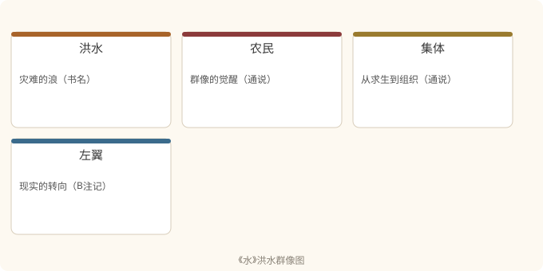

水
一、基本信息
| 作者 | 丁玲 |
|---|---|
| 成书/出版 | 1931年（作者页注记：Britannica——水 (1931)） Ding Ling — Encyclopaedia Britannica（百科全书） |
| 国别/地区 | 中国 |
| 时代 | 近代 · 20世纪30年代初 |
| 体裁 | 短篇小说 |
| 语言 | 汉语 |

《水》洪水群像图（主题·结构图）
二、创作背景
作者页注记：水 (1931)——'社会主义现实主义（Britannica）'。
Britannica：丁玲——现代中国女作家（作者页语境）。
题材（通说待核）：十六省水灾的农民群像——集体化的视角转换。
三、内容脉络
（通说待核）洪水中农民从个人求生到集体觉醒。
（通说待核）'水'：既是灾难也是人民之力。
四、主要人物表
| 人物 | 身份 | 说明 |
|---|---|---|
| 农民群像 | —— | （通说待核——无单一主角） |
五、主题与艺术特点
- '社会主义现实主义'的先声（B注记）。
- 灾难叙事的集体化（通说待核）。
- 从个人到群像的转换（作者页语境）。
六、影响与评论
- Britannica：水 (1931)（作者页注记）。
Ding Ling — Encyclopaedia Britannica（百科全书） - Britannica：丁玲左翼转向（作者页语境——待核）。
Ding Ling — Encyclopaedia Britannica（百科全书）
七、阅读建议
难点
- 1931年江淮大水史。
- '群像'的无主角结构。
- 《水》（人民文学出版社《丁玲全集》等——通说待核）。
- 1931年发表（《北斗》说）待核。
丁玲左翼阶段；与《莎菲女士的日记》对照。
八、待核实
- 1931年发表刊物核对。
- '群像'结构细节待核。
- '社会主义现实主义'评价（B注记）核对。